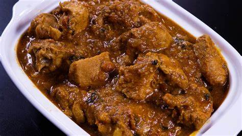

Chicken Gravey
Chicken gravy is a rich and savory sauce made from chicken drippings, broth, and seasonings. It's often thickened with flour or cornstarch to achieve a velvety texture. This versatile condiment enhances the flavor of poultry dishes and adds a comforting touch to mashed potatoes or rice.

Ingredients
- Flour or cornstarch
- Chicken
- Butter or oil
- Seasonings
- Onions
- Ghee
Directions
- Collect Drippings: If you're roasting chicken, collect the drippings from the pan. These drippings are packed with flavor and will serve as the base for your gravy.
- Make a Roux: In a saucepan, melt butter or heat oil over medium heat. Add an equal amount of flour to create a roux. Cook the roux, stirring constantly, until it turns a golden brown color. This helps to thicken the gravy and develop a deeper flavor.
- Incorporate Drippings: Gradually whisk the chicken drippings or broth into the roux. This helps to prevent lumps from forming. Continue to whisk until the mixture is smooth and well combined.
- Seasoning: Season the gravy with salt, pepper, and any additional herbs or spices to taste. Taste as you go and adjust the seasoning accordingly.
- Add chopped tomatoes and cook until they are soft and mushy.
- In a separate pot, bring water to a boil. Add the soaked rice and cook until it's about 70-80% done. Drain and set aside.
- Adjust Consistency: If the gravy is too thick, you can thin it out with a bit of water or chicken broth. If it's too thin, you can let it simmer for a few more minutes to reduce and thicken.
- Strain (Optional): If you prefer a smoother gravy, you can strain it through a fine mesh sieve to remove any lumps or bits of herbs.
- Serve Hot: Chicken gravy is best served hot alongside roasted or fried chicken, mashed potatoes, biscuits, or any other dish you like.
Tips
Layer Flavors: For a more complex and rich gravy, consider layering flavors. Start by browning onions and garlic in the pan before adding your roux. You can also deglaze the pan with a splash of white wine or chicken broth to incorporate any caramelized bits stuck to the bottom, known as fond, into your gravy.
Use Homemade Broth: While store-bought broth works perfectly fine, making your own chicken broth can take your gravy to the next level. Simmering chicken bones, aromatics, and herbs for several hours creates a deeply flavorful broth that will enhance the taste of your gravy.
Add Umami Boosters: Umami-rich ingredients like soy sauce, Worcestershire sauce, or a splash of balsamic vinegar can add depth and complexity to your gravy. Just a small amount of these ingredients can intensify the savory flavor profile of your gravy without overpowering it. Adjust the amount according to your taste preferences.
Return Home page